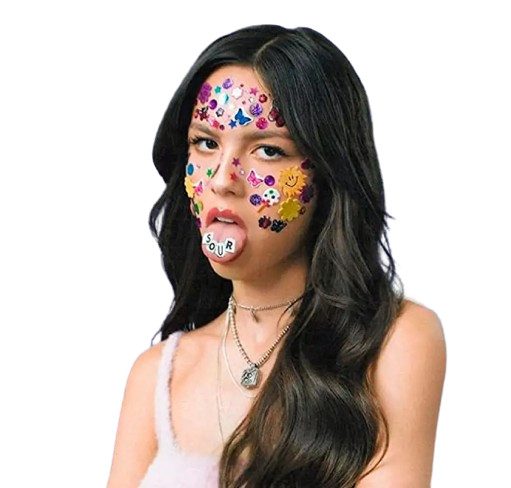

Biografia
Olivia Isabel Rodrigo, nascida em 20 de fevereiro de 2003, é uma cantora, compositora e atriz
filipino-americana que ganhou fama inicialmente em programas da Disney como Bizaardvark e High
School
Musical: The Musical: The Series. Em 2020, ela lançou seu single de estreia, "Drivers License", que
quebrou
recordes e a catapultou para o sucesso mainstream. Seu primeiro álbum, Sour (2021), foi um sucesso
de
crítica e comercial, ganhando diversos prêmios, incluindo três Grammys. Em 2023, ela lançou seu
segundo
álbum, Guts, que também foi bem-sucedido, consolidando sua posição como uma das principais artistas
da
atualidade. Rodrigo já alcançou três singles número um na Billboard Hot 100 e foi reconhecida com
prêmiosAno
como Artista do pela Time em 2021 e Mulher do Ano pela Billboard em 2022.
Vida e carreira

Aos 12 anos, fez sua estreia no filme An American Girl: Grace Stirs Up Success. Em 2016, ganhou
destaque
como Paige Olvera na série Bizaardvark da Disney e, em 2019, estrelou como Nini em High School
Musical:
The
Musical: The Series.
Em 2021, Rodrigo alcançou sucesso internacional com seu single "Drivers License", que quebrou
recordes e
liderou as paradas globais. Seu álbum de estreia, Sour, lançado no mesmo ano, foi amplamente
aclamado,
consolidando-a como uma das principais artistas da Geração Z. Em 2022, lançou o documentário Driving
Home 2
U e recebeu vários prêmios, incluindo três Grammys.
Em 2023, Rodrigo lançou seu segundo álbum, Guts, com os singles "Vampire" e "Bad Idea Right?". Guts
reflete
seu crescimento pessoal entre os 18 e 20 anos. Rodrigo também recebeu o BRIT Billion Award e lançou
a
música
"Can't Catch Me Now" para o filme The Hunger Games: The Ballad of Songbirds and Snakes.